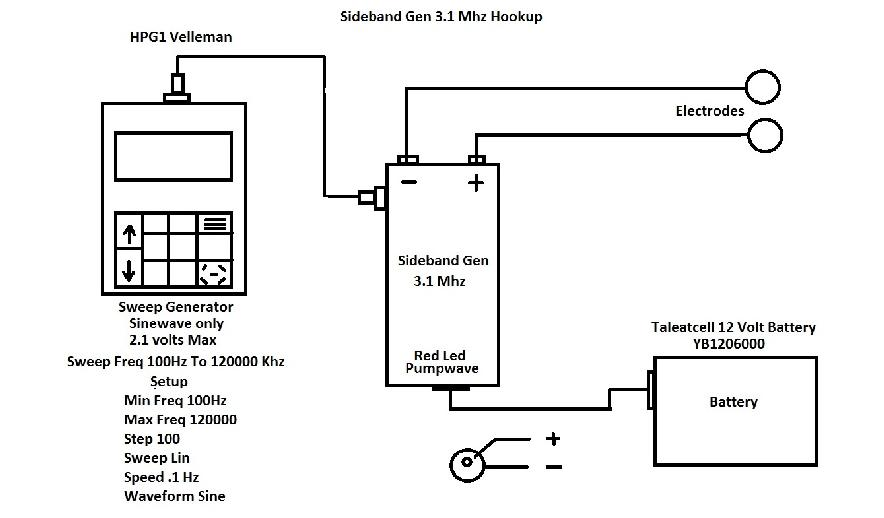

The RPX Sideband GeneratorNo Medical Advise or Claims is given on this page or what it can be used for. You do all this at your own Risk!! The sideband generator was built to generate sidebands in the 3.1 MHz Range. The side band generator was built using a programmable oscillator the Cardinal CPPC4-HT0PP can be programed for any frequency from 1Mhz to 150Mhz the oscillator produces a square wave signal at about 2.5 volts. To protect the oscillator a buffer stage is used in non-inverted mode. The modulator for this is using a single stage in class A to keep the distortion down this stage is inverting and produces a voltage gain of 3.5 db. This then modulates the output from the buffer stage normally not done this way but works very well in this application. The RF amplifier ic is operating in class C and is using two Fet's biased for low distortion of less then 1% the drive stage is capable of driving the antenna, coil of wire or pin electrodes in a plus and minus output a Balun is used for matching to a low power linear amplifier. A 555 timer is used to produce a Pump Wave to produce a small micro current to the output this allows a small current at 7 to 14 Hz across the electrodes if used it also sets a gating effect to pulse in-between the sidebands causing a chopping action. This action uses the DC to allow the RF to carry-in the fundamental frequency with sidebands.  Looking at the picture above you can see the normal hookup. The red led between the binding posts indicates the pump wave and power on. The unit should not be hooked up to a Wall Wart power supply as RF can enter the power lines. When the Taleatecell 12 Volt lithium battery is hooked up and then switched on the unit has power. You may use any 12 volt battery make sure the polarity is correct. The generator output should not exceed 2.1 volts AC and it should be sine wave only. If you want to purchase this unit the buy button below. Get the 3.1 Mhz Sideband Generator at http://sidebandgenerator.com The Generator is sold at http://sidebandgenerator.com/#hpg1 Battery sold at http://sidebandgenerator.com/#battery |